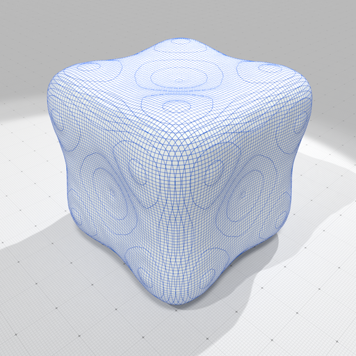
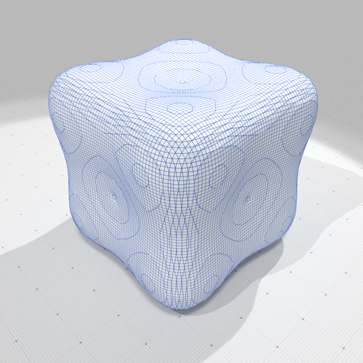
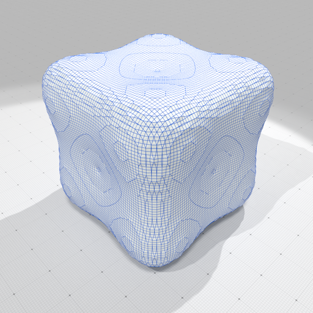

- Generated on Mon Jun 10 2024 17:36:18 for DGtal by
 1.11.0
1.11.0
|
DGtal 1.4.0
|
Part of the Geometry package.
This part of the manual describes classes and functions related to the regularization of digital surfaces using the "Shrouds" algorithm, by Nielson et al [92].
On binary 3D images, the "Shrouds" algorithm builds a smooth surface that separates the interior voxels from the exterior voxels. It starts from the (closed) digital surface that separates interior voxels from exterior voxels. The 3D smooth surface reconstruction problem is transformed into a series of 2D smooth contour reconstruction problems, by slicing the 3D volume (and thus the digital surface) with axis-align planes. Each contour is regularized to minimize its squared curvature and the separation property is obtained by forcing each vertex to lie on its unit edge joining an interior voxel to an exterior voxel (i.e. the edge that is dual to the surfel). The 2D problems are intertwined since each vertex is shared by two slices.
Disclaimer. This implementation is our interpretation of the work presented in [92], and tries to follow at best the ideas presented therein. However, a major part of the numerical resolution is not detailed. We have inferred a reasonable way of solving the fourth-order equations but results may differ from the original implementation. For instance, visually on the bunny example of the paper, our results are very close (and look better). This implementation comes thus without any guarantee.
Related example: geometry/surfaces/testShroudsRegularization.cpp
Let I be a binary image and S the digital surface that is the boundary of the object in I. Slicing S by a plane aligned orthogonal to an axis k defines a ring of consecutive surfels, that can be seen as a simple contour joining points \( X[s] \) associated to each surfel \( s \in S \). If we define a meaningful adjacency on the digital surface (see Digital surfaces), when joining points \( X[\cdot] \) corresponding adjacent surfels within the slice, we build closed 2D contours. Since each surfel in 3D has only two tangent directions, each surfel belongs to exactly two orthogonal contours. During the regularization, the "Shrouds" algorithm principle is to move the point \( X[s] \) associated to each surfel s in a constrained way : it can only move on the unit segment that is orthogonal to the surfel, otherwise said the point is constrained to lie on the edge dual to the primal surfel.
The "Shrouds" algorithm minimizes a global energy that is determined by the positions of each point on its two contours. The user can choose between minimizing the area of the output surface (ShroudsRegularization::Regularization::AREA), the snake energy of the output surface (ShroudsRegularization::Regularization::SNAKE) or the squared curvature of the output surface (ShroudsRegularization::Regularization::SQUARED_CURVATURE). The latter one gives the best results.
The snake energy \( E^{snk} \) and the squared curvature energy \( E^{\kappa^2} \) are defined per slice on each 2D contour.
For a slice contour \( C=(x(s),y(s)) \) and boundary constraints, we define:
\[ E^{snk}(C) = \int_C \alpha (x'(s)^2 + y'(s)^2) + \beta (x''(s)^2 + y''(s)^2) ds, \]
and
\[ E^{\kappa^2}(C) = \int_C (x'(s) y''(s) + x''(s) y'(s))^2 / (x'(s)^2 + y'(s)^2)^3 ds, \]
Apart from area energy, energies \( E^{snk}(C) \) and \( E^{\kappa^2}(C) \) are not convex and movement constraints on \( X \) make things worse. We propose here dedicated finite difference algorithms giving a reasonnable gradient descent for the regularization process, together with randomization at the beginning.
Starting from an implicit digital surface (with a gridstep set to 0.3 instead of 1 on images):
we obtain the following slice geometry, best seen on the polygonal surface dual to the digital surface:
The regularization class instance can be set up with default parameters using the following syntax:
You may use ShroudsRegularization::setParams to change some parameters:
We can now minimize the squared curvature energy as follows:
The user can specify the number of steps of the gradient descent as well as the randomization. If the ShroudsRegularization::regularize method is called another time, the descent starts from the previous results (aka warm restart).
Using the default settings, we obtain the following reconstruction, after respectively 100 and 1000 iterations:

Optimized surface according to squared curvature (100 iterations). |
Optimized surface according to squared curvature (1000 iterations). |
Clearly, the result after 1000 iterations is more satisfactory. You may output the result for instance as:
You may optimize according the shape according to area minimization as follows:
and according to snake energy as follows (use ShroudsRegularization::setParams to change \( \alpha,\beta \) parameters):
We display below the three possible optimizations (after 1000 iterations), which shows that squared curvature energy \( E^{\kappa^2}(C) \) produces the best output.
Optimized surface according to squared curvature. |

Optimized surface according to snake energy. |

Optimized surface according to area. |